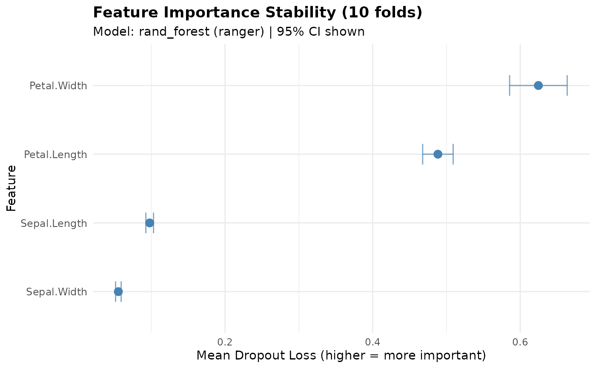

Analyze Feature Importance Stability Across Cross-Validation Folds
Source:R/explain_stability.R
explain_stability.RdComputes feature importance for each fold model and aggregates results to assess the stability of feature importance rankings across resamples. This helps identify features that are consistently important vs those whose importance varies across different data subsets.
Usage
explain_stability(
object,
model_name = NULL,
vi_iterations = 10,
seed = 123,
plot = FALSE,
conf_level = 0.95
)Arguments
- object
A
fastmlobject trained withstore_fold_models = TRUE.- model_name
Character string specifying which model to analyze. If NULL, uses the best model. Should match the format "algorithm (engine)", e.g., "rand_forest (ranger)".
- vi_iterations
Integer. Number of permutations for variable importance per fold. Default is 10 for faster computation across many folds.
- seed
Integer. Random seed for reproducibility.
- plot
Logical. If TRUE, displays a stability plot showing mean importance with confidence intervals. Default is FALSE.
- conf_level
Numeric. Confidence level for intervals. Default is 0.95.
Value
A list with class "fastml_stability" containing:
- importance_summary
Data frame with aggregated feature importance (mean, sd, se, lower/upper CI) across folds.
- fold_importance
List of per-fold variable importance results.
- rank_stability
Data frame showing how feature ranks vary across folds.
- n_folds
Number of folds analyzed.
- model_name
Name of the model analyzed.
Details
This function requires that the fastml model was trained with
store_fold_models = TRUE, which stores the models fitted on each
cross-validation fold. Without stored fold models, only the final best
model is available, and cross-fold stability analysis is not possible.
The stability analysis computes permutation-based variable importance for each fold's model using DALEX, then aggregates across folds to show:
Mean importance and standard deviation
Confidence intervals for importance
Rank stability (how consistently features rank across folds)
Features with high mean importance but also high variance may be important for some data subsets but not others, suggesting potential instability in the model's reliance on those features.
Examples
# \donttest{
# Train model with fold models stored
model <- fastml(
data = iris,
label = "Species",
algorithms = "rand_forest",
store_fold_models = TRUE
)
# Analyze stability
stability <- explain_stability(model)
#> Computing variable importance for 10 folds...
#> Warning: ‘-’ not meaningful for factors
#> Warning: ‘-’ not meaningful for factors
#> Warning: ‘-’ not meaningful for factors
#> Warning: ‘-’ not meaningful for factors
#> Warning: ‘-’ not meaningful for factors
#> Warning: ‘-’ not meaningful for factors
#> Warning: ‘-’ not meaningful for factors
#> Warning: ‘-’ not meaningful for factors
#> Warning: ‘-’ not meaningful for factors
#> Warning: ‘-’ not meaningful for factors
#> Successfully computed importance for 10 of 10 folds.
print(stability)
#>
#> === Feature Importance Stability Analysis ===
#> Model: rand_forest (ranger)
#> Number of folds: 10
#> Confidence level: 95%
#>
#> Top features by mean importance:
#> variable mean_importance sd_importance lower_ci upper_ci
#> 1 Petal.Width 0.6246 0.0630 0.5856 0.6636
#> 2 Petal.Length 0.4884 0.0333 0.4678 0.5091
#> 3 Sepal.Length 0.0978 0.0084 0.0926 0.1031
#> 4 Sepal.Width 0.0554 0.0061 0.0516 0.0592
#>
#>
#> Rank stability (lower SD = more stable ranking):
#> variable mean_rank sd_rank min_rank max_rank
#> 1 Petal.Width 1 0 1 1
#> 2 Petal.Length 2 0 2 2
#> 3 Sepal.Length 3 0 3 3
#> 4 Sepal.Width 4 0 4 4
plot(stability)
#> `height` was translated to `width`.

# }